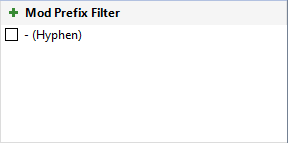
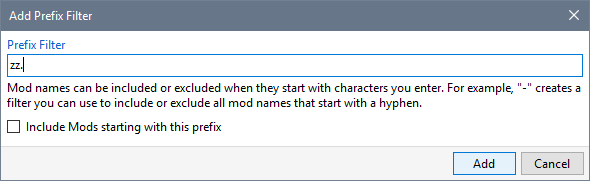
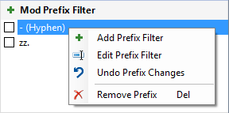
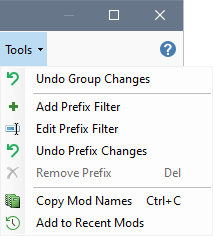

Mod Prefix filters allow you define a list of characters that are used to include or exclude Mod names from the list. For example, if you define a hyphen (-) as a prefix filter and clear the check box (tick), then any Mod name that starts with a hyphen is excluded from the Mod list.

You can add additional Prefix characters by clicking the Mod Prefix Filter heading or Add Prefix Filter from the Tools menu, entering one or more characters and clicking Add.

You can use the Tools or right-click menu to manipulate Prefix filters.


Use Filter Boxes to specify filtering criteria
Use Mod Prefix Filters